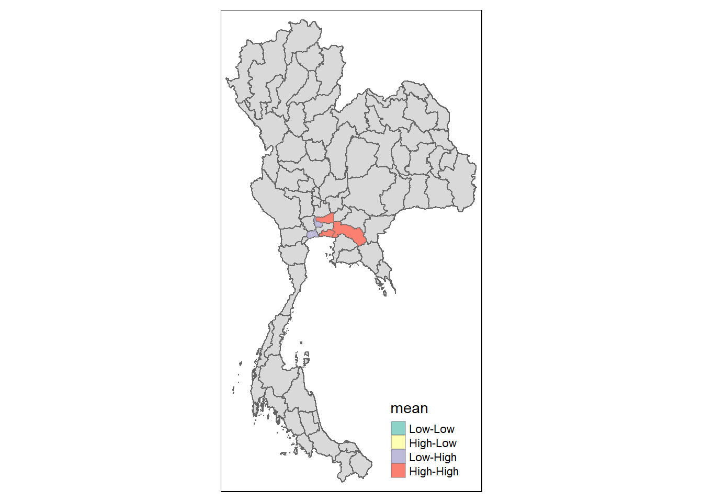
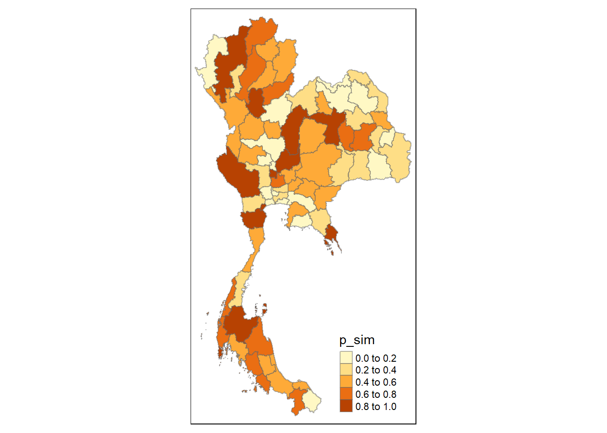

pacman::p_load(sf, st, tidyverse, raster, tmap, tmaptools, ggplot2, spatstat, sfdep)Hands On Exercise 2
1.0 Introduction
Drug abuse is associated with significant negative health, financial and social consequences. Yet, illicit drug consumption remains highly prevalent and continues to be a growing problem worldwide.
The geopolitics of Thailand which is near the Golden Triangle of Indochina, the largest drug production site in Asia, and the constant transportation infrastructure development made Thailand became market and transit routes for drug trafficking to the third countries.
In Thailand, drug abuse is one of the major social issue. There are about 2.7 million youths using drugs in Thailand. Among youths aged between 15 and 19 years, there are about 300,000 who have needs for drug treatment. Most of Thai youths involved with drugs are vocational-school students, which nearly doubles in number compared to secondary-school students.
2.0 Getting Started
2.1 Loading packages into R
2.2 Importing the datasets
For the purpose of this take-home exercise, two data sets shall be used, they are:
Thailand Drug Offenses [2017-2022] at Kaggle.
Thailand - Subnational Administrative Boundaries at HDX. You are required to use the province boundary data set.
2.2.1 Importing Thailand Drug Offenses (csv file)
The dataset, which we downloaded from Kaggle, is in csv format. The codes chunk below uses read_csv() function of readr package to import the dataset into R as a tibble data frame called drug_offences.
The data has also been transformed such it only contains cases of drug use.
drug_offences <- read_csv("data/thai_drug_offenses_2017_2022.csv")Rows: 7392 Columns: 5
── Column specification ────────────────────────────────────────────────────────
Delimiter: ","
chr (3): types_of_drug_offenses, province_th, province_en
dbl (2): fiscal_year, no_cases
ℹ Use `spec()` to retrieve the full column specification for this data.
ℹ Specify the column types or set `show_col_types = FALSE` to quiet this message.2.2.2 Importing Thailand Subnational Administrative Boundaries (shp)
thailand_sf <- read_sf(dsn = "data",
layer = "tha_admbnda_adm1_rtsd_20220121") %>%
st_as_sf(coords =c(
"longitude", "latitude"),
crs = 4326) %>%
st_transform(crs = 24047)thailand_sfSimple feature collection with 77 features and 16 fields
Geometry type: MULTIPOLYGON
Dimension: XY
Bounding box: xmin: 325695.7 ymin: 620511.7 xmax: 1214171 ymax: 2262888
Projected CRS: Indian 1975 / UTM zone 47N
# A tibble: 77 × 17
Shape_Leng Shape_Area ADM1_EN ADM1_TH ADM1_PCODE ADM1_REF ADM1ALT1EN
* <dbl> <dbl> <chr> <chr> <chr> <chr> <chr>
1 2.42 0.131 Bangkok กรุงเทพ… TH10 <NA> <NA>
2 1.70 0.0793 Samut Prakan สมุทรปร… TH11 <NA> <NA>
3 1.25 0.0532 Nonthaburi นนทบุรี TH12 <NA> <NA>
4 1.88 0.127 Pathum Thani ปทุมธานี TH13 <NA> <NA>
5 3.04 0.214 Phra Nakhon Si … พระนคร… TH14 <NA> <NA>
6 1.74 0.0792 Ang Thong อ่างทอง TH15 <NA> <NA>
7 5.69 0.546 Lop Buri ลพบุรี TH16 <NA> <NA>
8 1.78 0.0687 Sing Buri สิงห์บุรี TH17 <NA> <NA>
9 2.90 0.209 Chai Nat ชัยนาท TH18 <NA> <NA>
10 4.77 0.292 Saraburi สระบุรี TH19 <NA> <NA>
# ℹ 67 more rows
# ℹ 10 more variables: ADM1ALT2EN <chr>, ADM1ALT1TH <chr>, ADM1ALT2TH <chr>,
# ADM0_EN <chr>, ADM0_TH <chr>, ADM0_PCODE <chr>, date <date>,
# validOn <date>, validTo <date>, geometry <MULTIPOLYGON [m]>2.3 Geospatial Data Wrangling
2.3.1 Fixing province names
There is a mismatch of the province names between the datasets we are importing. We resolve this by changing the names of provinces in the drug offenses dataset to align.
Loburi -> Lop Buri
Buogkan -> Bueng Kan
drug_offences <- drug_offences %>%
mutate(province_en = replace(province_en, province_en == 'buogkan', 'Bueng Kan')) %>%
mutate(province_en = replace(province_en, province_en == 'Loburi', 'Lop Buri'))
drug_offences# A tibble: 7,392 × 5
fiscal_year types_of_drug_offenses no_cases province_th province_en
<dbl> <chr> <dbl> <chr> <chr>
1 2017 drug_use_cases 11871 กรุงเทพมหานคร Bangkok
2 2017 drug_use_cases 200 ชัยนาท Chai Nat
3 2017 drug_use_cases 553 นนทบุรี Nonthaburi
4 2017 drug_use_cases 450 ปทุมธานี Pathum Thani
5 2017 drug_use_cases 378 พระนครศรีอยุธยา Phra Nakhon Si Ayu…
6 2017 drug_use_cases 727 ลพบุรี Lop Buri
7 2017 drug_use_cases 820 สมุทรปราการ Samut Prakan
8 2017 drug_use_cases 69 สระบุรี Saraburi
9 2017 drug_use_cases 127 สิงห์บุรี Sing Buri
10 2017 drug_use_cases 208 อ่างทอง Ang Thong
# ℹ 7,382 more rows2.3.2 Performing relational join
The code chunk below will be used to update the attribute table of thailand_sf’s SpatialPolygonsDataFrame with the attribute fields of drug_offenses dataframe. This is performed by using left_join() of dplyr package.
drug_offences_thailand <- thailand_sf %>%
left_join(drug_offences,
by = c("ADM1_EN" = "province_en",
"ADM1_TH" = "province_th")) %>%
dplyr::select(1:2, 17:20)drug_offences_thailandSimple feature collection with 7392 features and 5 fields
Geometry type: MULTIPOLYGON
Dimension: XY
Bounding box: xmin: 325695.7 ymin: 620511.7 xmax: 1214171 ymax: 2262888
Projected CRS: Indian 1975 / UTM zone 47N
# A tibble: 7,392 × 6
Shape_Leng Shape_Area geometry fiscal_year
<dbl> <dbl> <MULTIPOLYGON [m]> <dbl>
1 2.42 0.131 (((674854.6 1542947, 674897.1 1542925, 674… 2017
2 2.42 0.131 (((674854.6 1542947, 674897.1 1542925, 674… 2018
3 2.42 0.131 (((674854.6 1542947, 674897.1 1542925, 674… 2019
4 2.42 0.131 (((674854.6 1542947, 674897.1 1542925, 674… 2020
5 2.42 0.131 (((674854.6 1542947, 674897.1 1542925, 674… 2021
6 2.42 0.131 (((674854.6 1542947, 674897.1 1542925, 674… 2022
7 2.42 0.131 (((674854.6 1542947, 674897.1 1542925, 674… 2017
8 2.42 0.131 (((674854.6 1542947, 674897.1 1542925, 674… 2018
9 2.42 0.131 (((674854.6 1542947, 674897.1 1542925, 674… 2019
10 2.42 0.131 (((674854.6 1542947, 674897.1 1542925, 674… 2020
# ℹ 7,382 more rows
# ℹ 2 more variables: types_of_drug_offenses <chr>, no_cases <dbl>drug_offences_thailand_sf <- st_as_sf(drug_offences_thailand)
st_crs(drug_offences_thailand_sf) <- st_crs(thailand_sf)
print(st_crs(drug_offences_thailand_sf))Coordinate Reference System:
User input: EPSG:24047
wkt:
PROJCRS["Indian 1975 / UTM zone 47N",
BASEGEOGCRS["Indian 1975",
DATUM["Indian 1975",
ELLIPSOID["Everest 1830 (1937 Adjustment)",6377276.345,300.8017,
LENGTHUNIT["metre",1]]],
PRIMEM["Greenwich",0,
ANGLEUNIT["degree",0.0174532925199433]],
ID["EPSG",4240]],
CONVERSION["UTM zone 47N",
METHOD["Transverse Mercator",
ID["EPSG",9807]],
PARAMETER["Latitude of natural origin",0,
ANGLEUNIT["degree",0.0174532925199433],
ID["EPSG",8801]],
PARAMETER["Longitude of natural origin",99,
ANGLEUNIT["degree",0.0174532925199433],
ID["EPSG",8802]],
PARAMETER["Scale factor at natural origin",0.9996,
SCALEUNIT["unity",1],
ID["EPSG",8805]],
PARAMETER["False easting",500000,
LENGTHUNIT["metre",1],
ID["EPSG",8806]],
PARAMETER["False northing",0,
LENGTHUNIT["metre",1],
ID["EPSG",8807]]],
CS[Cartesian,2],
AXIS["(E)",east,
ORDER[1],
LENGTHUNIT["metre",1]],
AXIS["(N)",north,
ORDER[2],
LENGTHUNIT["metre",1]],
USAGE[
SCOPE["Engineering survey, topographic mapping."],
AREA["Thailand - onshore west of 102°E plus offshore Gulf of Thailand west of 102°E."],
BBOX[5.63,97.34,20.46,102.01]],
ID["EPSG",24047]]2.3.3 Visualising Regional Development Indicator
We prepare a basemap and a choropleth map showing the distribution of drug offences by using qtm() of tmap package.
Due to the large size of the dataset, we split the drug offences occurrences by their fiscal year to make it more convenient to process.
drug_offence_list <- split(drug_offences_thailand, drug_offences_thailand$fiscal_year)In the chunk of code below, we create a list to store the plots for each of the drug offences occurring during their respective fiscal year.
tmap_mode("plot")tmap mode set to plottingplot_list <- list()
# Loop through the list and create a plot for each year, storing them in plot_list
for (year in names(drug_offence_list)) {
p <- tm_shape(drug_offence_list[[year]]) +
tm_fill("no_cases",
n = 5,
style = "quantile",
title = "Number of Cases") +
tm_borders(alpha = 0.5) +
tm_layout(main.title = paste("EQC", year),
legend.outside = TRUE,
legend.outside.position = "right")
# Store the plot in the list
plot_list[[year]] <- p
}tmap_arrange(plotlist = plot_list,
ncol = 2,
nrow = 3)It can be seen that drug offenses were most prevalent in 2017-2019, however tapered off in 2020. The most probable reason would likely due to Covid-19 resulting in the nationwide lockdown, which may hinder police reports and access to drugs from dealers.
Cases were also much more prevalent in the Southern area of Thailand, in comparison to the Northen provinces.
3.0 Drug Use Cases 2019
3.1 Global Measures of Spatial Autocorrelation
3.1.1 Computing Contiguity Spatial Weights
We need to first construct a spatial weight of the study area, used to define the neighbourhood relationships between the provinces in Thailand.
As the dataset we are working with takes a significant time to process due to its large size, we choose to analyse only one fiscal year for efficiency. In this case, we have taken 2019 as it is the most prevalent before 2020 occurred.
drug_offence_list[[3]]Simple feature collection with 1232 features and 5 fields
Geometry type: MULTIPOLYGON
Dimension: XY
Bounding box: xmin: 325695.7 ymin: 620511.7 xmax: 1214171 ymax: 2262888
Projected CRS: Indian 1975 / UTM zone 47N
# A tibble: 1,232 × 6
Shape_Leng Shape_Area geometry fiscal_year
<dbl> <dbl> <MULTIPOLYGON [m]> <dbl>
1 2.42 0.131 (((674854.6 1542947, 674897.1 1542925, 674… 2019
2 2.42 0.131 (((674854.6 1542947, 674897.1 1542925, 674… 2019
3 2.42 0.131 (((674854.6 1542947, 674897.1 1542925, 674… 2019
4 2.42 0.131 (((674854.6 1542947, 674897.1 1542925, 674… 2019
5 2.42 0.131 (((674854.6 1542947, 674897.1 1542925, 674… 2019
6 2.42 0.131 (((674854.6 1542947, 674897.1 1542925, 674… 2019
7 2.42 0.131 (((674854.6 1542947, 674897.1 1542925, 674… 2019
8 2.42 0.131 (((674854.6 1542947, 674897.1 1542925, 674… 2019
9 2.42 0.131 (((674854.6 1542947, 674897.1 1542925, 674… 2019
10 2.42 0.131 (((674854.6 1542947, 674897.1 1542925, 674… 2019
# ℹ 1,222 more rows
# ℹ 2 more variables: types_of_drug_offenses <chr>, no_cases <dbl>We then filter it such that we only address the drug use cases for now, to reduce the size of the dataset.
drug_use_2019 <- drug_offence_list[[3]] %>%
filter(types_of_drug_offenses == "drug_use_cases")We now generate the neighbours list.
wm_q_druguse_2019 <- drug_use_2019 %>%
mutate(nb = st_contiguity(geometry))The dataset has Phuket as a province with no neighbors. The code chunk below manually fills it in using Phuket’s nearest neighbour.
empty_index <- 67
nearest_index <- 68
wm_q_druguse_2019$nb[[empty_index]] <- as.integer(nearest_index)wm_q_druguse_2019 <- wm_q_druguse_2019 %>%
mutate(wt = st_weights(nb,
style = "W"),
.before=1)3.1.2 Moran’s I test
The code chunk below performs Moran’s I statistical testing using moran.test() of sfdep.
moranI_druguse_2019 <- global_moran(wm_q_druguse_2019$no_cases,
wm_q_druguse_2019$nb,
wm_q_druguse_2019$wt)
glimpse(moranI_druguse_2019)List of 2
$ I: num 0.137
$ K: num 13.7Performing Global Moran’s I test
global_moran_test(wm_q_druguse_2019$no_cases,
wm_q_druguse_2019$nb,
wm_q_druguse_2019$wt)
Moran I test under randomisation
data: x
weights: listw
Moran I statistic standard deviate = 2.1116, p-value = 0.01736
alternative hypothesis: greater
sample estimates:
Moran I statistic Expectation Variance
0.136645270 -0.013157895 0.005032986 3.1.3 Monte Carlo simulation
Next, global_moran_perm() is used to perform Monte Carlo simulation.
global_moran_perm(wm_q_druguse_2019$no_cases,
wm_q_druguse_2019$nb,
wm_q_druguse_2019$wt,
nsim = 99)
Monte-Carlo simulation of Moran I
data: x
weights: listw
number of simulations + 1: 100
statistic = 0.13665, observed rank = 98, p-value = 0.04
alternative hypothesis: two.sidedThe statistical report shows that the p-value is larger than alpha value of 0.05. Hence, we have enough statistical evidence to prove that spatial distribution of drug use cases are not independent from geographical reasons.
Because the Moran’s I statistics is greater than 0. We can infer that the spatial distribution shows sign of clustering.
3.2 Local Measures of Spatial Autocorrelation
3.2.1 Local Indicators of Spatial Association (LISA)
lisa_druguse_2019 <- wm_q_druguse_2019 %>%
mutate(local_moran = local_moran(
no_cases, nb, wt, nsim = 99),
.before = 1) %>%
unnest(local_moran)tmap_mode("plot")tmap mode set to plottingThe output of local_moran() is a sf dataframe containing the following:
- ii: local moran statistic
- eii: expectation of local moran statistic
- var_ii: variance of local moran statistic
- z_ii: standard deviate of local moran statistic
- skewness: the output of e1071::skewness() for the permutation samples underlying the standard deviates
- kurtosis: For
localmoran_perm, the output of e1071::kurtosis() for the permutation samples underlying the standard deviates.
In this code chunk below, tmap functions are used prepare a choropleth map by using value in the ii field.
tm_shape(lisa_druguse_2019) +
tm_fill("ii") +
tm_borders(alpha = 0.5) +
tm_view(set.zoom.limits = c(6,8)) +
tm_layout(main.title = "local Moran's I of number of drug cases",
main.title.size = 0.8)In lisa sf data.frame, we can find three fields contain the LISA categories. They are mean, median and pysal. In general, classification in mean will be used as shown in the code chunk below.
lisa_sig_druguse_2019 <- lisa_druguse_2019 %>%
filter(p_ii < 0.05)
tmap_mode("plot")tmap mode set to plottingtm_shape(lisa_druguse_2019) +
tm_polygons() +
tm_borders(alpha = 0.5) +
tm_shape(lisa_sig_druguse_2019) +
tm_fill("mean") +
tm_borders(alpha = 0.4)Warning: One tm layer group has duplicated layer types, which are omitted. To
draw multiple layers of the same type, use multiple layer groups (i.e. specify
tm_shape prior to each of them).
We will need to derive a spatial weight matrix before we can compute local Gi* statistics
wm_idw_druguse_2019 <- wm_q_druguse_2019 %>%
mutate(nb = include_self(
st_contiguity(geometry)),
wts = st_inverse_distance(nb,
geometry,
scale = 1,
alpha = 1),
.before = 1)! Polygon provided. Using point on surface.We will now compute the local Gi* by using the code chunk below.
HCSA_druguse_2019 <- wm_idw_druguse_2019 %>%
mutate(local_Gi = local_gstar_perm(
no_cases, nb, wts, nsim = 99),
.before = 1) %>%
unnest(local_Gi)In the code chunk below, tmap functions are used to plot the local Gi* (i.e. gi_star) at the province level.
tmap_mode("plot")
tm_shape(HCSA_druguse_2019) +
tm_fill("gi_star") +
tm_borders(alpha = 0.5) +
tm_view(set.zoom.limits = c(6,8))3.2.1.1 P-value of HCSA
In the code chunk below, tmap functions are used to plot the p-values of local Gi* (i.e. p_sim) at the province level.
tmap_mode("plot")tmap mode set to plottingtm_shape(HCSA_druguse_2019) +
tm_fill("p_sim") +
tm_borders(alpha = 0.5)
3.2.1.2 Visualising local HCSA
tmap_mode("plot")tmap mode set to plottingdruguse_map1 <- tm_shape(HCSA_druguse_2019) +
tm_fill("gi_star") +
tm_borders(alpha = 0.5) +
tm_view(set.zoom.limits = c(6,8)) +
tm_layout(main.title = "Gi* of GDPPC",
main.title.size = 0.8)
druguse_map2 <- tm_shape(HCSA_druguse_2019) +
tm_fill("p_value",
breaks = c(0, 0.001, 0.01, 0.05, 1),
labels = c("0.001", "0.01", "0.05", "Not sig")) +
tm_borders(alpha = 0.5) +
tm_layout(main.title = "p-value of Gi*",
main.title.size = 0.8)
tmap_arrange(druguse_map1, druguse_map2, ncol = 2)3.2.1.3 Visualising hot spot and cold spot areas
tmap_mode("plot")tmap mode set to plottingHCSA_sig_druguse_2019 <- HCSA_druguse_2019 %>%
filter(p_sim < 0.05)
tm_shape(HCSA_druguse_2019) +
tm_polygons() +
tm_borders(alpha = 0.5) +
tm_shape(HCSA_sig_druguse_2019) +
tm_fill("cluster") +
tm_borders(alpha = 0.4)The figure indicates a cluster of high drug use cases around the capital Bangkok. This suggests that factors unique to Bangkok, such as socioeconomic conditions or accessibility to drug supply may contribute to higher occurrences.
4.0 Possession Cases 2019
The same code chunks as above will now be applied to possession cases in Thailand in 2019.
possession_cases_2019 <- drug_offence_list[[3]] %>%
filter(types_of_drug_offenses == "possession_cases")Again, we modify the neighbour sets such that there are no empty neighbours.
wm_q_poss_2019 <- possession_cases_2019 %>%
mutate(nb = st_contiguity(geometry))empty_index <- 67
nearest_index <- 68
wm_q_poss_2019$nb[[empty_index]] <- as.integer(nearest_index)wm_q_poss_2019 <- wm_q_poss_2019 %>%
mutate(wt = st_weights(nb,
style = "W"),
.before=1)4.1.2 Moran’s I test
The code chunk below performs Moran’s I statistical testing using moran.test() of sfdep.
moranI_poss_2019 <- global_moran(wm_q_poss_2019$no_cases,
wm_q_poss_2019$nb,
wm_q_poss_2019$wt)
glimpse(moranI_poss_2019)List of 2
$ I: num 0.434
$ K: num 13.4Performing Global Moran’s I test
global_moran_test(wm_q_poss_2019$no_cases,
wm_q_poss_2019$nb,
wm_q_poss_2019$wt)
Moran I test under randomisation
data: x
weights: listw
Moran I statistic standard deviate = 6.2921, p-value = 1.566e-10
alternative hypothesis: greater
sample estimates:
Moran I statistic Expectation Variance
0.434234887 -0.013157895 0.005055692 4.1.3 Monte Carlo simulation
Next, global_moran_perm() is used to perform Monte Carlo simulation.
global_moran_perm(wm_q_poss_2019$no_cases,
wm_q_poss_2019$nb,
wm_q_poss_2019$wt,
nsim = 99)
Monte-Carlo simulation of Moran I
data: x
weights: listw
number of simulations + 1: 100
statistic = 0.43423, observed rank = 100, p-value < 2.2e-16
alternative hypothesis: two.sidedThe statistical report on previous tab shows that the p-value is smaller than alpha value of 0.05. Hence, we have enough statistical evidence to reject the null hypothesis that the spatial distribution of drug cases resemble random distribution (i.e. independent from spatial).
Because the Moran’s I statistics is greater than 0. We can infer that the spatial distribution shows sign of clustering.
4.2 Local Measures of Spatial Autocorrelation
4.2.1 Local Indicators of Spatial Association (LISA)
lisa_poss_2019 <- wm_q_poss_2019 %>%
mutate(local_moran = local_moran(
no_cases, nb, wt, nsim = 99),
.before = 1) %>%
unnest(local_moran)tmap_mode("plot")tmap mode set to plottingIn this code chunk below, tmap functions are used prepare a choropleth map by using value in the ii field.
tm_shape(lisa_poss_2019) +
tm_fill("ii") +
tm_borders(alpha = 0.5) +
tm_view(set.zoom.limits = c(6,8)) +
tm_layout(main.title = "local Moran's I of number of drug cases",
main.title.size = 0.8)In lisa sf data.frame, we can find three fields contain the LISA categories. They are mean, median and pysal. In general, classification in mean will be used as shown in the code chunk below.
lisa_sig_poss_2019 <- lisa_poss_2019 %>%
filter(p_ii < 0.05)
tmap_mode("plot")tmap mode set to plottingtm_shape(lisa_poss_2019) +
tm_polygons() +
tm_borders(alpha = 0.5) +
tm_shape(lisa_sig_poss_2019) +
tm_fill("mean") +
tm_borders(alpha = 0.4)We will need to derive a spatial weight matrix before we can compute local Gi* statistics
wm_idw_poss_2019 <- wm_q_poss_2019 %>%
mutate(nb = include_self(
st_contiguity(geometry)),
wts = st_inverse_distance(nb,
geometry,
scale = 1,
alpha = 1),
.before = 1)! Polygon provided. Using point on surface.We will now compute the local Gi* by using the code chunk below.
HCSA_poss_2019 <- wm_idw_poss_2019 %>%
mutate(local_Gi = local_gstar_perm(
no_cases, nb, wts, nsim = 99),
.before = 1) %>%
unnest(local_Gi)In the code chunk below, tmap functions are used to plot the local Gi* (i.e. gi_star) at the province level.
tmap_mode("plot")
tm_shape(HCSA_poss_2019) +
tm_fill("gi_star") +
tm_borders(alpha = 0.5) +
tm_view(set.zoom.limits = c(6,8))4.2.1.1 P-value of HCSA
In the code chunk below, tmap functions are used to plot the p-values of local Gi* (i.e. p_sim) at the province level.
tmap_mode("plot")
tm_shape(HCSA_poss_2019) +
tm_fill("p_sim") +
tm_borders(alpha = 0.5)4.2.1.2 Visualising local HCSA
tmap_mode("plot")
poss_map1 <- tm_shape(HCSA_poss_2019) +
tm_fill("gi_star") +
tm_borders(alpha = 0.5) +
tm_view(set.zoom.limits = c(6,8)) +
tm_layout(main.title = "Gi* of GDPPC",
main.title.size = 0.8)
poss_map2 <- tm_shape(HCSA_poss_2019) +
tm_fill("p_value",
breaks = c(0, 0.001, 0.01, 0.05, 1),
labels = c("0.001", "0.01", "0.05", "Not sig")) +
tm_borders(alpha = 0.5) +
tm_layout(main.title = "p-value of Gi*",
main.title.size = 0.8)
tmap_arrange(poss_map1, poss_map2, ncol = 2)4.2.1.3 Visualising hot spot and cold spot areas
HCSA_sig_poss_2019 <- HCSA_poss_2019 %>%
filter(p_sim < 0.05)
tmap_mode("plot")
tm_shape(HCSA_poss_2019) +
tm_polygons() +
tm_borders(alpha = 0.5) +
tm_shape(HCSA_sig_poss_2019) +
tm_fill("cluster") +
tm_borders(alpha = 0.4)The map indicates clusters of high drug possession cases in the northern and southern regions of Thailand, such as Samut Prakan and Chiang Mai. Samut Prakan has several transportation hubs, including Suvarnabhumi Airport. This could facilitate the movement of drugs into and out of the province. As for Chiang Mai, it has an influx of tourists which can be a reason for higher cases of drug possession.
5.0 Import Cases 2019
The same code chunks as above will now be applied to possession cases in Thailand in 2019.
import_cases_2019 <- drug_offence_list[[3]] %>%
filter(types_of_drug_offenses == "import_cases")Again, we modify the neighbour sets such that there are no empty neighbours.
wm_q_import_2019 <- import_cases_2019 %>%
mutate(nb = st_contiguity(geometry))empty_index <- 67
nearest_index <- 68
wm_q_import_2019$nb[[empty_index]] <- as.integer(nearest_index)wm_q_import_2019 <- wm_q_import_2019 %>%
mutate(wt = st_weights(nb,
style = "W"),
.before=1)5.1.2 Moran’s I test
The code chunk below performs Moran’s I statistical testing using moran.test() of sfdep.
moranI_import_2019 <- global_moran(wm_q_import_2019$no_cases,
wm_q_import_2019$nb,
wm_q_import_2019$wt)
glimpse(moranI_import_2019)List of 2
$ I: num 0.19
$ K: num 45Performing Global Moran’s I test
global_moran_test(wm_q_import_2019$no_cases,
wm_q_import_2019$nb,
wm_q_import_2019$wt)5.1.3 Monte Carlo simulation
Next, global_moran_perm() is used to perform Monte Carlo simulation.
global_moran_perm(wm_q_import_2019$no_cases,
wm_q_import_2019$nb,
wm_q_import_2019$wt,
nsim = 99)The statistical report on previous tab shows that the p-value is smaller than alpha value of 0.05. Hence, we have enough statistical evidence to reject the null hypothesis that the spatial distribution of drug cases resemble random distribution (i.e. independent from spatial).
Because the Moran’s I statistics is greater than 0. We can infer that the spatial distribution shows sign of clustering.
5.2 Local Measures of Spatial Autocorrelation
5.2.1 Local Indicators of Spatial Association (LISA)
lisa_import_2019 <- wm_q_import_2019 %>%
mutate(local_moran = local_moran(
no_cases, nb, wt, nsim = 99),
.before = 1) %>%
unnest(local_moran)tmap_mode("plot")tmap mode set to plottingIn this code chunk below, tmap functions are used prepare a choropleth map by using value in the ii field.
tm_shape(lisa_import_2019) +
tm_fill("ii") +
tm_borders(alpha = 0.5) +
tm_view(set.zoom.limits = c(6,8)) +
tm_layout(main.title = "local Moran's I of import cases",
main.title.size = 0.8)In lisa sf data.frame, we can find three fields contain the LISA categories. They are mean, median and pysal. In general, classification in mean will be used as shown in the code chunk below.
lisa_sig_import_2019 <- lisa_import_2019 %>%
filter(p_ii < 0.05)
tmap_mode("plot")tmap mode set to plottingtm_shape(lisa_import_2019) +
tm_polygons() +
tm_borders(alpha = 0.5) +
tm_shape(lisa_sig_import_2019) +
tm_fill("mean") +
tm_borders(alpha = 0.4)We will need to derive a spatial weight matrix before we can compute local Gi* statistics
wm_idw_import_2019 <- wm_q_import_2019 %>%
mutate(nb = include_self(
st_contiguity(geometry)),
wts = st_inverse_distance(nb,
geometry,
scale = 1,
alpha = 1),
.before = 1)! Polygon provided. Using point on surface.We will now compute the local Gi* by using the code chunk below.
HCSA_import_2019 <- wm_idw_import_2019 %>%
mutate(local_Gi = local_gstar_perm(
no_cases, nb, wts, nsim = 99),
.before = 1) %>%
unnest(local_Gi)
HCSA_import_2019Simple feature collection with 77 features and 18 fields
Geometry type: MULTIPOLYGON
Dimension: XY
Bounding box: xmin: 325695.7 ymin: 620511.7 xmax: 1214171 ymax: 2262888
Projected CRS: Indian 1975 / UTM zone 47N
# A tibble: 77 × 19
gi_star cluster e_gi var_gi std_dev p_value p_sim p_folded_sim skewness
<dbl> <fct> <dbl> <dbl> <dbl> <dbl> <dbl> <dbl> <dbl>
1 -0.510 Low 2.40e-6 1.67e-11 -0.546 0.585 0.4 0.19 2.98
2 -0.298 Low 1.41e-6 1.86e-11 -0.327 0.744 0.54 0.01 3.73
3 -0.505 Low 1.07e-6 4.47e-12 -0.505 0.614 0.28 0.01 4.45
4 -0.482 Low 1.69e-6 7.71e-12 -0.502 0.616 0.84 0.41 2.76
5 -0.563 Low 1.39e-6 5.56e-12 -0.486 0.627 0.54 0.27 3.69
6 -0.486 Low 1.59e-6 9.84e-12 -0.508 0.611 0.3 0.01 2.52
7 -0.656 Low 1.37e-6 2.98e-12 -0.736 0.462 0.32 0.15 1.72
8 -0.546 Low 1.45e-6 6.30e-12 -0.577 0.564 0.18 0.01 2.79
9 -0.501 Low 7.47e-7 1.99e-12 -0.530 0.596 0.3 0.01 4.11
10 -0.556 Low 7.84e-7 2.36e-12 -0.511 0.610 0.22 0.01 3.39
# ℹ 67 more rows
# ℹ 10 more variables: kurtosis <dbl>, wts <list>, wt <list>, Shape_Leng <dbl>,
# Shape_Area <dbl>, geometry <MULTIPOLYGON [m]>, fiscal_year <dbl>,
# types_of_drug_offenses <chr>, no_cases <dbl>, nb <nb>In the code chunk below, tmap functions are used to plot the local Gi* (i.e. gi_star) at the province level.
tmap_mode("plot")
tm_shape(HCSA_import_2019) +
tm_fill("gi_star") +
tm_borders(alpha = 0.5) +
tm_view(set.zoom.limits = c(6,8))3.2.1.1 P-value of HCSA
In the code chunk below, tmap functions are used to plot the p-values of local Gi* (i.e. p_sim) at the province level.
tmap_mode("plot")
tm_shape(HCSA_import_2019) +
tm_fill("p_sim") +
tm_borders(alpha = 0.5)3.2.1.2 Visualising local HCSA
tmap_mode("plot")
import_map1 <- tm_shape(HCSA_import_2019) +
tm_fill("gi_star") +
tm_borders(alpha = 0.5) +
tm_view(set.zoom.limits = c(6,8)) +
tm_layout(main.title = "Gi* of GDPPC",
main.title.size = 0.8)
import_map2 <- tm_shape(HCSA_import_2019) +
tm_fill("p_value",
breaks = c(0, 0.001, 0.01, 0.05, 1),
labels = c("0.001", "0.01", "0.05", "Not sig")) +
tm_borders(alpha = 0.5) +
tm_layout(main.title = "p-value of Gi*",
main.title.size = 0.8)
tmap_arrange(import_map1, import_map2, ncol = 2)3.2.1.3 Visualising hot spot and cold spot areas
HCSA_sig_import_2019 <- HCSA_import_2019 %>%
filter(p_sim < 0.05)
tmap_mode("plot")
tm_shape(HCSA_import_2019) +
tm_polygons() +
tm_borders(alpha = 0.5) +
tm_shape(HCSA_sig_import_2019) +
tm_fill("cluster") +
tm_borders(alpha = 0.4)Phatthalung, Songkhla, and Satun are considered transportation hubs in southern Thailand. They are connected via railway lines, ferries, and airports, which may be a reason why drug imports are very high there.